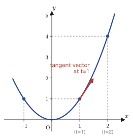
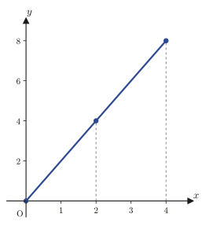
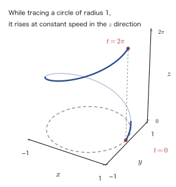

Chapter 17Calculus of Vector-Valued Functions
In the calculus we have studied so far (Part I), the output of a function has always been a single real number (a scalar). For example, for $f(x)=x^2$, the output for an input $x$ is just a number. However, if we consider, say, “the position of an object at time $t$,” the position is described by a triple of numbers—the $x$-coordinate, the $y$-coordinate, and the $z$-coordinate—that is, by a vector. A function whose input is a number (a parameter) but whose output is a vector is called a vector-valued function. In this chapter we learn how the ideas of differentiation and integration should be extended to such vector-valued functions.
To state the conclusion first: differentiation and integration of vector-valued functions require only that we differentiate or integrate the scalar-valued functions component by component, so almost no new computational technique is needed. What is difficult is not the computation itself but the meaning: “what do we obtain when we differentiate?” and “what do we obtain when we integrate?” For example, differentiating the position vector gives the velocity vector (the tangent vector), and integrating the speed (the magnitude of the velocity vector) with respect to time gives the distance traveled (the length of the curve). In the first half of this chapter (Sections 17.1–17.4) we treat vector-valued functions $\vec y(t)=[x_1(t),x_2(t),x_3(t)]$ of a single parameter; in the second half (Sections 17.5–17.6) we treat vector-valued functions $\vec a(u,v)$ of two parameters—for example, the position of a point on a surface—and derive a formula for the area of a surface. The idea we acquire here—“describe a surface by parameters, and build the area element from the cross product of the tangent vectors”—is the foundation of the surface integrals that we study in Chapter 20.
- The definition of the derivative of a vector-valued function $\vec y(t)=[x_1(t),x_2(t),x_3(t)]$, and its meaning as a tangent vector
- The formula $S=\displaystyle\int_{t_1}^{t_2}\abs{\vec f\,'(t)}\,dt$ for the length of a curve (arc length), and its derivation, which carries the Pythagorean theorem over into a limit
- The definitions of the indefinite and definite integrals of a vector-valued function (integration component by component), and the formulas for linearity and integration by parts together with their proofs
- The fact that the first-order linear differential equation $\dfrac{d\vec y}{dt}+p(t)\vec y=\vec g(t)$ decomposes into scalar first-order linear differential equations, one for each component
- The partial derivatives and the total differential of a vector-valued function $\vec P(u,v)$ of two variables (a parametric representation of a surface)
- The formula $S=\displaystyle\iint_D\abs{\pdiff{\vec P}{u}\times\pdiff{\vec P}{v}}\,dudv$ for the area of a surface, and its special case for a surface of the form $z=f(x,y)$
Source notes: Yasuhide Mochizuki, Mathematics Notes: Vector Analysis, pp. 17–24.
17.1 Differentiation of Vector-Valued Functions and Tangent Vectors
When each choice of a point $t$ on the number line (you may think of it as time) determines a point $[x_1(t),x_2(t),x_3(t)]$ in space, this correspondence is called a vector-valued function. It is a function whose input $t$ is a real number (a scalar) and whose output is a triple of real numbers (a vector), and in this sense it is contrasted with the functions we have had so far, whose output was only a single real number (scalar-valued functions). For example, if we write the position of a particle at time $t$ as $\vec y(t)=[x_1(t),x_2(t),x_3(t)]$, this is exactly a vector-valued function.
Definition 17.1: Differentiation of vector-valued functions
Suppose that, for each component of a vector-valued function $\vec y(t)=[x_1(t),x_2(t),x_3(t)]$, the derivatives $x_1'(t),x_2'(t),x_3'(t)$ exist. Then $\vec y(t)$ is said to be differentiable. In this case we define the derivative $\vec y\,'(t)$ of $\vec y(t)$ by
$$ \vec y\,'(t) = [x_1'(t),\ x_2'(t),\ x_3'(t)] $$The derivative $\vec y\,'(t)$ of $\vec y(t)$ is defined, using a limit, as
\begin{equation} \vec y\,'(t) = \lim_{\Delta t\to0}\frac{\vec y(t+\Delta t)-\vec y(t)}{\Delta t} \label{eq:17-derivative-def} \end{equation}as well.
Why do the two definitions agree?
On the right-hand side of Eq. \eqref{eq:17-derivative-def}, the vector subtraction $\vec y(t+\Delta t)-\vec y(t)$ is the component-by-component subtraction $[\,x_1(t+\Delta t)-x_1(t),\ x_2(t+\Delta t)-x_2(t),\ x_3(t+\Delta t)-x_3(t)\,]$, and the division by the scalar $\Delta t$ is also carried out component by component (dividing a vector by a scalar meant dividing each component by that scalar). Therefore, we have
$$ \lim_{\Delta t\to0}\frac{\vec y(t+\Delta t)-\vec y(t)}{\Delta t} = \left[\ \lim_{\Delta t\to0}\frac{x_1(t+\Delta t)-x_1(t)}{\Delta t},\ \ \lim_{\Delta t\to0}\frac{x_2(t+\Delta t)-x_2(t)}{\Delta t},\ \ \lim_{\Delta t\to0}\frac{x_3(t+\Delta t)-x_3(t)}{\Delta t}\ \right] $$(The convention adopted here is that a limit of a vector may be taken for each component separately.) What stands inside the brackets on the right-hand side is exactly the definition of $x_1'(t),x_2'(t),x_3'(t)$ themselves (the definition of the derivative at a point by a limit, which we learned in Chapter 1). Hence Eq. \eqref{eq:17-derivative-def} agrees perfectly with $\vec y\,'(t)=[x_1',x_2',x_3']$ in Definition 17.1. To differentiate a vector-valued function, it suffices to regard each component as a function of one variable and differentiate the components separately—this is the most basic guideline, and we will use it repeatedly throughout this chapter.
Thanks to this guideline, the differentiation formulas for vector-valued functions take exactly the same form as those for scalar-valued functions (as far as linearity is concerned). For example, if $\vec a(t),\vec b(t)$ are vector-valued functions and $k$ is a constant, then
$$ \{\vec a(t)+\vec b(t)\}' = \vec a\,'(t)+\vec b\,'(t),\qquad \{k\,\vec a(t)\}' = k\,\vec a\,'(t) $$hold. Indeed, let $\vec a(t)=[a_1(t),a_2(t),a_3(t)]$ and $\vec b(t)=[b_1(t),b_2(t),b_3(t)]$. Then each component of the sum $\vec a(t)+\vec b(t)$ is $a_i(t)+b_i(t)$ ($i=1,2,3$), and differentiating it by the sum rule for scalar-valued functions (covered in high school mathematics) gives $\{a_i+b_i\}'=a_i'+b_i'$. Combining the three components,
$$ \{\vec a(t)+\vec b(t)\}' = [\,a_1'+b_1',\ \ a_2'+b_2',\ \ a_3'+b_3'\,] = [\,a_1',a_2',a_3'\,]+[\,b_1',b_2',b_3'\,] = \vec a\,'(t)+\vec b\,'(t) $$so the left equality is proved. Similarly, each component of the constant multiple $k\,\vec a(t)$ is $k\,a_i(t)$, and the constant-multiple rule for scalar-valued functions gives $\{k\,a_i\}'=k\,a_i'$, so that
$$ \{k\,\vec a(t)\}' = [\,k\,a_1',\ \ k\,a_2',\ \ k\,a_3'\,] = k\,[\,a_1',a_2',a_3'\,] = k\,\vec a\,'(t) $$and the right equality is proved as well.
Intuition: What does differentiation give us?—The tangent vector
When we differentiate a scalar-valued function $y=f(x)$ of one variable, geometrically what we obtain is the “slope,” that is, the slope of the tangent line to the graph. We can think in the same way about a vector-valued function $\vec y(t)$. On the curve traced by $\vec y(t)$, consider the displacement vector $\vec y(t_0+\Delta t)-\vec y(t_0)$ for $t$ changing from $t_0$ to $t_0+\Delta t$. This vector divided by $\Delta t$ (the expression inside the limit in Eq. \eqref{eq:17-derivative-def}) is a vector pointing in the direction of the chord joining two points on the curve. If we take the limit $\Delta t\to0$, this chord becomes shorter and shorter, and in the end the vector approaches a vector pointing in the direction of the tangent line at the point $\vec y(t_0)$ on the curve. That is, differentiating a vector-valued function gives a “vector indicating the size of the slope,” namely the tangent vector. If we regard $\vec y(t)$ as the position of an object at time $t$, then $\vec y\,'(t)$ is none other than the velocity vector of that object.

Illustration 17.1: Differentiating $\vec f(t)=[t,t^2]$
An example from the original notes. Consider the graph of $\vec f(t)=[t,t^2]$ (Figure 17.1). Differentiating each component with respect to $t$, we get $x_1'(t)=1$ from $x_1(t)=t$ and $x_2'(t)=2t$ from $x_2(t)=t^2$, so by Definition 17.1
$$ \vec f\,'(t) = [1,\ 2t] $$For example, the tangent vector at $t=1$ is $\vec f\,'(1)=[1,2]$. It points in the direction obtained by moving one to the right and two up from the point $(1,1)$ at $t=1$ in Figure 17.1 (that is, the direction of a line of slope 2). This agrees perfectly, in terms of direction as well, with the result we learned in high school mathematics that “the slope of the tangent line to $y=x^2$ at $x=1$ is $2\times1=2$.”
Example 17.1: Velocity and speed of a point moving in the plane
Suppose that the position of a point moving in the plane is given at time $t$ (seconds) by $\vec r(t)=[t^2,\,t^3]$ (meters). (a) Find the velocity vector $\vec r\,'(t)$. (b) Find the velocity vector at $t=1$ and the speed at that time (the magnitude of the velocity vector).
Solution. (a) Differentiating component by component according to Definition 17.1, we get $x_1'(t)=2t$ from $x_1(t)=t^2$ and $x_2'(t)=3t^2$ from $x_2(t)=t^3$, so
$$ \vec r\,'(t) = [2t,\ 3t^2]\ \text{(m/s)} $$(b) Substituting $t=1$ gives $\vec r\,'(1)=[2,3]$ (m/s). The speed is obtained by substituting $t=1$ into the magnitude of the velocity vector, $\abs{\vec r\,'(t)}=\sqrt{(2t)^2+(3t^2)^2}$:
$$ \abs{\vec r\,'(1)} = \sqrt{2^2+3^2} = \sqrt{13}\ \text{(m/s)} $$(Numerically, $\sqrt{13}\fallingdotseq3.61$.) Note that the velocity vector $\vec r\,'(t)$ is a quantity that has direction as well as magnitude, whereas the speed $\abs{\vec r\,'(t)}$ is a scalar quantity obtained by extracting only its magnitude.
17.2 Length of a Curve
As we saw in the previous section, $\vec f\,'(t)$ gives the tangent vector of the curve (the velocity vector, if the function describes a position). What, then, do we obtain by integrating its magnitude $\abs{\vec f\,'(t)}$ (the speed) with respect to time? To state the conclusion first, it is the distance actually traveled along the curve, that is, the length of the curve (the arc length). You probably learned in high school mathematics, too, that integrating “speed” with respect to time gives “distance traveled,” and this is exactly the same idea.
Definition 17.2: Length of a curve
When the parameter $t$ varies over the range $t_1\le t\le t_2$, the length $S$ of the curve traced by the moving point $\vec f(t)=[x(t),y(t),z(t)]$ is given by
\begin{equation} S = \int_{t_1}^{t_2}\abs{\vec f\,'(t)}\,dt = \int_{t_1}^{t_2}\sqrt{x'(t)^2+y'(t)^2+z'(t)^2}\,dt \label{eq:17-arclength} \end{equation}(In the two-dimensional case, it is $\displaystyle\int_{t_1}^{t_2}\sqrt{x'(t)^2+y'(t)^2}\,dt$.)
This Eq. \eqref{eq:17-arclength} is a generalization of Formula 5.18 in Chapter 5, Section 5.5, “the length $L=\displaystyle\int_a^b\sqrt{1+\{f'(x)\}^2}\,dx$ of a curve of the form $y=f(x)$.” Indeed, if we set $x(t)=t,\ y(t)=f(t)$ (that is, we use $x$ itself as the parameter), then $x'(t)=1,\ y'(t)=f'(t)$, so Eq. \eqref{eq:17-arclength} becomes $\displaystyle\int_a^b\sqrt{1+\{f'(t)\}^2}\,dt$, which agrees exactly with Formula 5.18. Formula 5.18 could handle only “special curves whose graph has the form $y=f(x)$,” whereas Eq. \eqref{eq:17-arclength} can be used for any space curve along which $x,y,z$ each move independently as functions of $t$, so it is a truly general formula.
Derivation: Deriving Eq. \eqref{eq:17-arclength} from the Pythagorean theorem
Let $S$ be the length of the curve from $t=t_1$ to $t=t_2$. Let us cut the curve into very short intervals and consider a single small interval (Figure 17.2). Decompose the displacement of the point when $t$ changes by $\Delta t$ into the displacements $\Delta x,\Delta y,\Delta z$ in each of the $x,y,z$ directions. The small displacement is then the diagonal of a rectangular box whose three edges have lengths $\Delta x,\Delta y,\Delta z$, so by the Pythagorean theorem (used twice: first find the diagonal $\sqrt{\Delta x^2+\Delta y^2}$ in the $xy$-plane, then find a diagonal once more from that and $\Delta z$) the length $\Delta S$ of the small arc can be approximated by
$$ \Delta S = \sqrt{\Delta x^2+\Delta y^2+\Delta z^2} \tag{①} $$(the shorter the arc, the closer the length $\Delta S$ of the chord comes to the length of the arc itself). If we take the limit $\Delta t\to0$ on both sides of Eq. ①, then $\Delta x,\Delta y,\Delta z,\Delta S$ become the infinitesimals $dx,dy,dz,ds$, respectively, and we obtain
$$ ds = \sqrt{(dx)^2+(dy)^2+(dz)^2} = \sqrt{\left(\frac{dx}{dt}\right)^2+\left(\frac{dy}{dt}\right)^2+\left(\frac{dz}{dt}\right)^2}\cdot dt \tag{②} $$(In the second equality, we factored $dt^2$ out of each term under the root sign, as in $\left(\frac{dx}{dt}\right)^2dt^2$, and took it outside the root sign as $dt$; since $dt>0$, no absolute value is needed.) Attaching $\displaystyle\int_{t_1}^{t_2}$ to both sides of Eq. ② and adding up (stacking the infinitesimals $ds$ from $t_1$ to $t_2$ gives the total length $S$), we obtain
$$ S = \int_{t_1}^{t_2}\sqrt{(x')^2+(y')^2+(z')^2}\,dt $$Furthermore, since $\sqrt{(x')^2+(y')^2+(z')^2}$ equals the magnitude $\abs{\vec f\,'(t)}$ of the vector $\vec f\,'(t)=[x'(t),y'(t),z'(t)]$ (the square root of the sum of the squares of the components—which is precisely the definition of the magnitude), we have
$$ S = \int_{t_1}^{t_2}\abs{\vec f\,'(t)}\,dt $$∎
Illustration 17.2: Length of a straight line: $\vec f(t)=[t,2t]$
An example from the original notes. As an example, consider $\vec f(t)=[t,2t]$ (Figure 17.4, the line through the origin with slope 2). Let us find the length from $t=0$ to $t=4$. Since $\vec f\,'(t)=[1,2]$, we have $\abs{\vec f\,'(t)}=\sqrt{1^2+2^2}=\sqrt5$ (a constant independent of $t$), and therefore
$$ S_1 = \int_0^4\abs{\vec f\,'(t)}\,dt = \int_0^4\sqrt5\,dt = \sqrt5\,[\,t\,]_0^4 = 4\sqrt5 $$Since this curve is a straight line, we can check the result directly with the Pythagorean theorem: the point at $t=0$ is $(0,0)$ and the point at $t=4$ is $(4,8)$, so the distance between the two points is $\sqrt{4^2+8^2}=\sqrt{16+64}=\sqrt{80}=4\sqrt5$, which agrees.

Illustration 17.3: Length of a space curve: $\vec f(t)=[t,\sqrt3\,t,t^2]$
An example from the original notes. Consider $\vec f(t)=[t,\sqrt3\,t,t^2]$. Let us find the length from $t=0$ to $t=\sqrt3$. Since $\vec f\,'(t)=[1,\sqrt3,2t]$, we have
$$ \abs{\vec f\,'(t)} = \sqrt{1^2+(\sqrt3)^2+(2t)^2} = \sqrt{1+3+4t^2} = 2\sqrt{1+t^2} $$(We factored out $1+3=4$ and wrote $\sqrt{4(1+t^2)}=2\sqrt{1+t^2}$.) Hence we have
$$ S_2 = \int_0^{\sqrt3}\abs{\vec f\,'(t)}\,dt = 2\int_0^{\sqrt3}\sqrt{1+t^2}\,dt $$Here, using the formula $\displaystyle\int\sqrt{1+x^2}\,dx=\frac12\left(x\sqrt{1+x^2}+\ln\abs{x+\sqrt{1+x^2}}\right)+C$ (a well-known indefinite integral, although it lies outside the scope of high school mathematics; you can verify it yourself with the substitution $x=\tan\theta$, or with the substitution obtained by setting $\sqrt{1+x^2}=u-x$), we get
$$ \int_0^{\sqrt3}\sqrt{1+t^2}\,dt = \frac12\left[t\sqrt{1+t^2}+\ln\abs{t+\sqrt{1+t^2}}\right]_0^{\sqrt3} = \frac12\left(\sqrt3\cdot2+\ln(\sqrt3+2)\right) $$(We used $\sqrt{1+3}=2$.) Finally, we must not forget that this integral is not $S_2$ itself but the inside of the expression that was doubled to make $S_2$; multiplying by 2 once more at the very end, we obtain
$$ S_2 = 2\times\frac12\left(2\sqrt3+\ln(\sqrt3+2)\right) = 2\sqrt3+\ln(\sqrt3+2)\ \bigl(\fallingdotseq4.78\bigr) $$which is the correct answer.
Caution: A calculation error in the original notes (forgetting to multiply by the factor 2)
In the source notes, after correctly setting up $S_2=2\displaystyle\int_0^{\sqrt3}\sqrt{1+t^2}\,dt$, the factor 2 that had been pulled out in front was forgotten at the stage of substituting the formula for the indefinite integral, and the final answer was written as $S_2=\dfrac12\left(2\sqrt3+\ln(\sqrt3+2)\right)\fallingdotseq2.39$. This, however, is a calculation error caused by failing to include the factor 2; the correct value is $S_2=2\sqrt3+\ln(\sqrt3+2)\fallingdotseq4.78$, as obtained above (verified with SymPy by both numerical and symbolic integration; see the verification script).
Example 17.2: Length of a helix
The curve $\vec f(t)=[\cos t,\sin t,t]$ (Figure 17.5) traces a circle of radius 1 in the $xy$-plane while at the same time rising at a constant speed in the $z$ direction; it is called a helix. Picture a spring (coil) or the double-helix structure of DNA. Find the length of this helix from $t=0$ to $t=2\pi$ (exactly one full turn).
Solution. Since $\vec f\,'(t)=[-\sin t,\cos t,1]$, we have
$$ \abs{\vec f\,'(t)} = \sqrt{(-\sin t)^2+(\cos t)^2+1^2} = \sqrt{\sin^2t+\cos^2t+1} = \sqrt{1+1} = \sqrt2 $$(We used the basic trigonometric identity $\sin^2t+\cos^2t=1$ from high school mathematics.) The speed $\abs{\vec f\,'(t)}=\sqrt2$ is constant, independent of $t$, so the integral is simply a multiplication, and we get
$$ S = \int_0^{2\pi}\sqrt2\,dt = \sqrt2\times2\pi = 2\sqrt2\,\pi\ \bigl(\fallingdotseq8.89\bigr) $$If there were no rise in the $z$ direction (that is, if it were only the circle in the plane, $\vec f(t)=[\cos t,\sin t]$), the length of one turn would be the circumference $2\pi\times1=2\pi\fallingdotseq6.28$. Since the actual distance traveled along the helix is longer by the amount of the rise, we have $2\sqrt2\,\pi\fallingdotseq8.89>2\pi\fallingdotseq6.28$, which agrees with our intuition.

17.3 Integration of Vector-Valued Functions
As with differentiation, the integral of a vector-valued function can be defined simply by “integrating each component as a scalar-valued function.” In this section we take up, in order, indefinite integrals, the linearity formulas, the integration by parts formulas, and definite integrals.
17.3.1 Indefinite integral
Definition 17.3: Indefinite integral of a vector-valued function
Let $\vec A(t)$ be one antiderivative of the vector-valued function $\vec a(t)$ (a function that becomes $\vec a(t)$ when differentiated). The indefinite integral of $\vec a$ is written $\displaystyle\int\vec a(t)\,dt$ and defined by
$$ \int\vec a(t)\,dt = \vec A(t)+\vec C $$where $\vec C$ is a vector all of whose components are constants, an arbitrary constant vector.
This is an integral built on exactly the same idea as the indefinite integral of a scalar-valued function: we simply integrate component by component. Indeed, let $\vec a(t)=[a_1(t),a_2(t),a_3(t)]$, $\vec A(t)=[A_1(t),A_2(t),A_3(t)]$, and $\vec C=[C_1,C_2,C_3]$ ($A_i'(t)=a_i(t)$, $C_i$ constants, $i=1,2,3$). Then
$$ \int\vec a\,dt = \left[\int a_1(t)\,dt,\ \int a_2(t)\,dt,\ \int a_3(t)\,dt\right] = [A_1(t)+C_1,\ A_2(t)+C_2,\ A_3(t)+C_3] $$and this can be rewritten as
$$ = [A_1(t),A_2(t),A_3(t)] + [C_1,C_2,C_3] = \vec A(t)+\vec C $$(Vector addition is addition component by component, so the result is the same whether we first assemble the three numbers into a vector and then split it, or add the components while they remain separate.) Thus we have confirmed that this agrees with the right-hand side of Definition 17.3.
17.3.2 Integration formulas (linearity)
Let $\vec a(t),\vec b(t)$ be vector-valued functions, $k$ a (scalar) constant, and $\vec k$ a constant vector. Then the following formulas hold.
Formula 17.1: Linearity of the integral of vector-valued functions
$$ \text{(I)}\ \ \int k\,\vec a(t)\,dt = k\int\vec a(t)\,dt \qquad\qquad \text{(II)}\ \ \int\{\vec a(t)+\vec b(t)\}\,dt = \int\vec a(t)\,dt+\int\vec b(t)\,dt $$ $$ \text{(III)}\ \ \int \vec k\cdot\vec a(t)\,dt = \vec k\cdot\left(\int\vec a(t)\,dt\right) \qquad\qquad \text{(IV)}\ \ \int \vec k\times\vec a(t)\,dt = \vec k\times\left(\int\vec a(t)\,dt\right) $$(I) and (II) can be verified by working component by component. Let $\vec a(t)=[a_1(t),a_2(t),a_3(t)]$. Then $k\,\vec a(t)=[\,k\,a_1,\ k\,a_2,\ k\,a_3\,]$, so applying to each component the linearity of the integral of scalar-valued functions, $\int kf\,dt=k\int f\,dt$ (which you already learned in high school mathematics), we obtain
$$ \int k\,\vec a(t)\,dt = \left[\int k\,a_1\,dt,\ \int k\,a_2\,dt,\ \int k\,a_3\,dt\right] = \left[k\int a_1\,dt,\ k\int a_2\,dt,\ k\int a_3\,dt\right] = k\left[\int a_1\,dt,\int a_2\,dt,\int a_3\,dt\right] = k\int\vec a(t)\,dt $$and (I) is proved. (II) is proved in the same way: letting $\vec b(t)=[b_1(t),b_2(t),b_3(t)]$, we have $\vec a(t)+\vec b(t)=[\,a_1+b_1,\ a_2+b_2,\ a_3+b_3\,]$, so applying to each component the formula for the integral of a sum of scalar-valued functions, $\int(f+g)\,dt=\int f\,dt+\int g\,dt$, we obtain
$$ \int\{\vec a(t)+\vec b(t)\}\,dt = \left[\int(a_1{+}b_1)dt,\ \int(a_2{+}b_2)dt,\ \int(a_3{+}b_3)dt\right] = \left[\int a_1dt{+}\!\int b_1dt,\ \int a_2dt{+}\!\int b_2dt,\ \int a_3dt{+}\!\int b_3dt\right] = \int\vec a(t)\,dt+\int\vec b(t)\,dt $$which proves it. Since (III) and (IV) involve the inner product (also called the dot product) and the cross product, operations that “mix different components,” let us check them a little more carefully.
Proof: Formula 17.1(III) (the inner product case)
Let $\vec k=[k_1,k_2,k_3]$ and $\vec a(t)=[a_1(t),a_2(t),a_3(t)]$. By the definition of the inner product (the sum of the products of corresponding components, Chapter 15), $\vec k\cdot\vec a(t)=k_1a_1(t)+k_2a_2(t)+k_3a_3(t)$, so the left-hand side is
$$ \int\vec k\cdot\vec a(t)\,dt = \int\{k_1a_1(t)+k_2a_2(t)+k_3a_3(t)\}\,dt $$The integrand on the right-hand side is built only from sums and constant multiples of scalar-valued functions, so by the linearity of the integral of scalar-valued functions we can split it as
$$ = k_1\int a_1(t)\,dt + k_2\int a_2(t)\,dt + k_3\int a_3(t)\,dt $$On the other hand, for the right-hand side of Formula 17.1(III), Definition 17.3 gives $\displaystyle\int\vec a(t)\,dt=\left[\int a_1\,dt,\int a_2\,dt,\int a_3\,dt\right]$, so taking the inner product of this with $\vec k$, again by the definition of the inner product (the sum of the products of corresponding components), we get
$$ \vec k\cdot\left(\int\vec a(t)\,dt\right) = k_1\int a_1(t)\,dt + k_2\int a_2(t)\,dt + k_3\int a_3(t)\,dt $$and the left-hand and right-hand sides turn out to be exactly the same expression. ∎
Proof: Formula 17.1(IV) (the cross product case)
We use the component form of the cross product (Chapter 15), $\vec k\times\vec a=[\,k_2a_3-k_3a_2,\ \ k_3a_1-k_1a_3,\ \ k_1a_2-k_2a_1\,]$. The first component of the left-hand side is
$$ \left[\int\vec k\times\vec a(t)\,dt\right]_1 = \int\{k_2a_3(t)-k_3a_2(t)\}\,dt = k_2\int a_3(t)\,dt-k_3\int a_2(t)\,dt $$(the last equality is the linearity of the integral of scalar-valued functions). On the other hand, the first component of the right-hand side $\vec k\times\left(\int\vec a\,dt\right)$ is obtained by substituting $\displaystyle\int\vec a\,dt=\left[\int a_1dt,\int a_2dt,\int a_3dt\right]$ into the first component of the component formula for the cross product ($k_2\times(\text{third component})-k_3\times(\text{second component})$), which gives
$$ \left[\vec k\times\int\vec a(t)\,dt\right]_1 = k_2\int a_3(t)\,dt-k_3\int a_2(t)\,dt $$so the first components agree. The second and third components can be checked by exactly the same procedure. For the second component, using the second component of the component formula for the cross product ($k_3a_1-k_1a_3$), the left-hand side becomes
$$ \left[\int\vec k\times\vec a(t)\,dt\right]_2 = \int\{k_3a_1(t)-k_1a_3(t)\}\,dt = k_3\int a_1(t)\,dt-k_1\int a_3(t)\,dt $$and for the right-hand side, substituting $\displaystyle\int\vec a\,dt=\left[\int a_1dt,\int a_2dt,\int a_3dt\right]$ into the same component formula gives
$$ \left[\vec k\times\int\vec a(t)\,dt\right]_2 = k_3\int a_1(t)\,dt-k_1\int a_3(t)\,dt $$so they agree. Similarly for the third component, using the third component of the component formula for the cross product ($k_1a_2-k_2a_1$), the left-hand side is
$$ \left[\int\vec k\times\vec a(t)\,dt\right]_3 = \int\{k_1a_2(t)-k_2a_1(t)\}\,dt = k_1\int a_2(t)\,dt-k_2\int a_1(t)\,dt $$and the right-hand side is
$$ \left[\vec k\times\int\vec a(t)\,dt\right]_3 = k_1\int a_2(t)\,dt-k_2\int a_1(t)\,dt $$so they agree. Since all the components have thus been shown to agree, $\displaystyle\int\vec k\times\vec a(t)\,dt=\vec k\times\int\vec a(t)\,dt$ holds. ∎
17.3.3 Integration formulas (integration by parts)
Let $\vec a(t),\vec b(t)$ be vector-valued functions and $f(t)$ a scalar-valued function, all of them differentiable with respect to $t$. Then the following integration by parts formulas hold.
Formula 17.2: Integration by parts for vector-valued functions
$$ \text{(I)}\ \ \int f(t)\,\vec a\,'(t)\,dt = f(t)\,\vec a(t) - \int f'(t)\,\vec a(t)\,dt $$ $$ \text{(II)}\ \ \int \vec a(t)\cdot\vec b\,'(t)\,dt = \vec a(t)\cdot\vec b(t) - \int \vec a\,'(t)\cdot\vec b(t)\,dt $$ $$ \text{(III)}\ \ \int \vec a(t)\times\vec b\,'(t)\,dt = \vec a(t)\times\vec b(t) - \int \vec a\,'(t)\times\vec b(t)\,dt $$Proof: Formula 17.2(I)
Let $\vec a(t)=[a_1(t),a_2(t),a_3(t)]$. Differentiating each component $f(t)a_i(t)$ ($i=1,2,3$) with respect to $t$, the product rule (covered in high school mathematics) gives
$$ \frac{d}{dt}\{f(t)a_i(t)\} = f'(t)a_i(t)+f(t)a_i'(t) $$Solving this for $f(t)a_i'(t)$ gives $f(t)a_i'(t)=\dfrac{d}{dt}\{f(t)a_i(t)\}-f'(t)a_i(t)$, so integrating both sides with respect to $t$, we obtain
$$ \int f(t)a_i'(t)\,dt = f(t)a_i(t) - \int f'(t)a_i(t)\,dt $$(the first term on the left-hand side comes from the fact that differentiating and then integrating returns the original function). This holds for every component $i=1,2,3$, so writing the three together in vector form gives
$$ \int f(t)\vec a\,'(t)\,dt = f(t)\vec a(t) - \int f'(t)\vec a(t)\,dt $$and Formula 17.2(I) is proved. ∎
Proof: Formula 17.2(II) (the inner product case)
Differentiating $\vec a(t)\cdot\vec b(t)=a_1b_1+a_2b_2+a_3b_3$ with respect to $t$ and using the product rule on each term, we get
$$ \frac{d}{dt}\{\vec a(t)\cdot\vec b(t)\} = (a_1'b_1+a_1b_1')+(a_2'b_2+a_2b_2')+(a_3'b_3+a_3b_3') = (a_1'b_1+a_2'b_2+a_3'b_3)+(a_1b_1'+a_2b_2'+a_3b_3') $$(we gathered the “terms with a derivative” together and the “terms without one” together, and regrouped the like terms). By the definition of the inner product, the contents of the parentheses on the right are none other than $\vec a\,'(t)\cdot\vec b(t)$ and $\vec a(t)\cdot\vec b\,'(t)$, respectively. That is,
$$ \frac{d}{dt}\{\vec a(t)\cdot\vec b(t)\} = \vec a\,'(t)\cdot\vec b(t)+\vec a(t)\cdot\vec b\,'(t) $$(this formula might well be called “Leibniz's rule for the inner product”; it is the vector version of the product rule for scalar-valued functions). Solving this for $\vec a(t)\cdot\vec b\,'(t)$ gives $\vec a\cdot\vec b\,'=\dfrac{d}{dt}(\vec a\cdot\vec b)-\vec a\,'\cdot\vec b$, and integrating both sides, we obtain
$$ \int\vec a(t)\cdot\vec b\,'(t)\,dt = \vec a(t)\cdot\vec b(t) - \int\vec a\,'(t)\cdot\vec b(t)\,dt $$∎
Proof: Formula 17.2(III) (the cross product case)
We differentiate with respect to $t$ the first component $a_2b_3-a_3b_2$ of the component form of the cross product, $\vec a\times\vec b=[\,a_2b_3-a_3b_2,\ \ a_3b_1-a_1b_3,\ \ a_1b_2-a_2b_1\,]$. Using the product rule on each of the two terms,
$$ \frac{d}{dt}(a_2b_3-a_3b_2) = (a_2'b_3+a_2b_3')-(a_3'b_2+a_3b_2') = (a_2'b_3-a_3'b_2)+(a_2b_3'-a_3b_2') $$The two parentheses on the right are exactly the first component of the cross product $\vec a\,'\times\vec b$ and the first component of $\vec a\times\vec b\,'$, respectively. For the second and third components, it suffices to carry out exactly the same computation on the remaining two expressions in the component form of the cross product. Differentiating the second component $a_3b_1-a_1b_3$ and using the product rule on the two terms, we obtain
$$ \frac{d}{dt}(a_3b_1-a_1b_3) = (a_3'b_1+a_3b_1')-(a_1'b_3+a_1b_3') = (a_3'b_1-a_1'b_3)+(a_3b_1'-a_1b_3') $$and the two parentheses on the right are the second component of the cross product $\vec a\,'\times\vec b$ and the second component of $\vec a\times\vec b\,'$, respectively. Similarly for the third component $a_1b_2-a_2b_1$,
$$ \frac{d}{dt}(a_1b_2-a_2b_1) = (a_1'b_2+a_1b_2')-(a_2'b_1+a_2b_1') = (a_1'b_2-a_2'b_1)+(a_1b_2'-a_2b_1') $$and again the two parentheses on the right are the third components of the cross products $\vec a\,'\times\vec b$ and $\vec a\times\vec b\,'$, respectively. Thus we have confirmed that the same structure (the sum of the cross product with the derivative and the cross product without it) appears in every component. Putting the three components together, therefore,
$$ \frac{d}{dt}\{\vec a(t)\times\vec b(t)\} = \vec a\,'(t)\times\vec b(t)+\vec a(t)\times\vec b\,'(t) $$“Leibniz's rule for the cross product” holds. Here, since the cross product is not commutative and $\vec u\times\vec v=-\vec v\times\vec u$ (Chapter 15), note that the order of the terms cannot be swapped at will (indeed, the right-hand side of the formula above carefully keeps the order, with $\vec a\,'\times\vec b$ first and $\vec a\times\vec b\,'$ second). Solving this formula for $\vec a(t)\times\vec b\,'(t)$ and integrating, we obtain
$$ \int\vec a(t)\times\vec b\,'(t)\,dt = \vec a(t)\times\vec b(t) - \int\vec a\,'(t)\times\vec b(t)\,dt $$∎
Example 17.3: Using the integration by parts formula
Let $\vec a(t)=[\sin t,\cos t]$ and $f(t)=t$. Use Formula 17.2(I) to find the indefinite integral $\displaystyle\int t\,\vec a\,'(t)\,dt$.
Solution. We have $\vec a\,'(t)=[\cos t,-\sin t]$. By Formula 17.2(I) ($f=t$, $f'=1$),
$$ \int t\,\vec a\,'(t)\,dt = t\,\vec a(t) - \int 1\cdot\vec a(t)\,dt = t[\sin t,\cos t] - \int[\sin t,\cos t]\,dt $$Substituting $\displaystyle\int\sin t\,dt=-\cos t+C_1$ and $\displaystyle\int\cos t\,dt=\sin t+C_2$ (basic formulas from high school mathematics), we obtain
$$ \int t\,\vec a\,'(t)\,dt = [\,t\sin t,\ t\cos t\,] - [\,-\cos t,\ \sin t\,] + \vec C = [\,t\sin t+\cos t,\ \ t\cos t-\sin t\,] + \vec C $$As a check, if we differentiate this result with respect to $t$, the first component becomes $\dfrac{d}{dt}(t\sin t+\cos t)=\sin t+t\cos t-\sin t=t\cos t$, and the second component becomes $\dfrac{d}{dt}(t\cos t-\sin t)=\cos t-t\sin t-\cos t=-t\sin t$. On the other hand, the original integrand is $t\,\vec a\,'(t)=t[\cos t,-\sin t]=[t\cos t,-t\sin t]$, and the two indeed agree.
17.3.4 Definite integral
Definition 17.4: Definite integral of a vector-valued function
Suppose that an antiderivative of the vector-valued function $\vec a(t)=[a_1(t),a_2(t),a_3(t)]$ is $\vec A(t)=[A_1(t),A_2(t),A_3(t)]$. Then the definite integral of $\vec a$ over the interval $[t_1,t_2]$ is defined by
$$ \int_{t_1}^{t_2}\vec a(t)\,dt = \left[\int_{t_1}^{t_2}a_1(t)\,dt,\ \int_{t_1}^{t_2}a_2(t)\,dt,\ \int_{t_1}^{t_2}a_3(t)\,dt\right] = [A_1(t_2)-A_1(t_1),\ A_2(t_2)-A_2(t_1),\ A_3(t_2)-A_3(t_1)] = \vec A(t_2)-\vec A(t_1) $$As in the case of the indefinite integral, we only need to compute the definite integral of each component.
Caution: A subscript error in the original notes
In the source notes, the upper limit of the definite integral for the second component (the part corresponding to the $y$ component) of the expression corresponding to Definition 17.4 is written $\displaystyle\int_{t_1}^{t_3}a_2(t)\,dt$. However, the interval considered in this section is always the single pair $[t_1,t_2]$, and the symbol $t_3$ is not defined anywhere. From the context we can judge that this is a mere slip of the pen, and that the upper limit should be $t_2$, the same as for the other components ($\displaystyle\int_{t_1}^{t_2}a_2(t)\,dt$). In Definition 17.4 above, we have given the correct form (all the upper limits are $t_2$).
Example 17.4: Computing a definite integral
Find $\displaystyle\int_0^{\pi}[\cos t,\ \sin t,\ 1]\,dt$.
Solution. Following Definition 17.4, we compute the definite integral component by component.
$$ \int_0^\pi\cos t\,dt = [\sin t]_0^\pi = \sin\pi-\sin0 = 0-0=0 $$ $$ \int_0^\pi\sin t\,dt = [-\cos t]_0^\pi = -\cos\pi-(-\cos0) = -(-1)-(-1) = 1+1=2 $$ $$ \int_0^\pi 1\,dt = [\,t\,]_0^\pi = \pi-0=\pi $$Therefore,
$$ \int_0^\pi[\cos t,\sin t,1]\,dt = [\,0,\ 2,\ \pi\,] $$holds.
17.4 First-Order Linear Differential Equations for Vector-Valued Functions
The solution of the first-order linear differential equation for a scalar-valued function $y(x)$
$$ \frac{dy}{dx}+p(x)y=g(x) $$is found, by the method of variation of parameters, in the form
\begin{equation} y(x) = e^{-\int p(x)\,dx}\left\{\int g(x)\,e^{\int p(x)\,dx}\,dx + C\right\} \label{eq:17-scalar-ode-solution} \end{equation}(this is the general-solution formula for first-order linear differential equations; we study it in detail in Chapter 33, Section 33.3). To be safe, let us also check this result here, briefly, by the integrating factor method.
Check: Deriving Eq. \eqref{eq:17-scalar-ode-solution} by the integrating factor method
Multiplying both sides of the equation $\dfrac{dy}{dx}+p(x)y=g(x)$ by the integrating factor $\mu(x)=e^{\int p(x)\,dx}$, we obtain
$$ \mu(x)\frac{dy}{dx}+\mu(x)p(x)y=\mu(x)g(x) $$Now note that, by the chain rule (differentiation of composite functions, Chapter 3), $\mu'(x)=p(x)\,e^{\int p(x)dx}=p(x)\mu(x)$. We then see that the left-hand side has the form of the product rule $\{\mu(x)y\}'=\mu'(x)y+\mu(x)y'$ read backward:
$$ \frac{d}{dx}\{\mu(x)y\} = \mu'(x)y+\mu(x)\frac{dy}{dx} = p(x)\mu(x)y+\mu(x)\frac{dy}{dx} $$If we interchange the order of the terms, this right-hand side is exactly the left-hand side $\mu(x)\dfrac{dy}{dx}+\mu(x)p(x)y$ of the equation. Therefore the equation can be rewritten as
$$ \frac{d}{dx}\{\mu(x)y\} = \mu(x)g(x) $$Integrating both sides with respect to $x$ (the left-hand side is differentiated and then integrated, so it simply returns to $\mu(x)y$), we obtain
$$ \mu(x)y = \int \mu(x)g(x)\,dx + C $$Finally, dividing both sides by $\mu(x)$ and using $\dfrac{1}{\mu(x)}=e^{-\int p(x)dx}$, we obtain
$$ y(x) = e^{-\int p(x)\,dx}\left\{\int g(x)\,e^{\int p(x)\,dx}\,dx + C\right\} $$and thus Eq. \eqref{eq:17-scalar-ode-solution} is confirmed. ∎
Here we consider a differential equation of a very similar form, in which the unknown function is a vector-valued function,
\begin{equation} \frac{d\vec y}{dt}+p(t)\vec y=\vec g(t) \label{eq:17-vector-ode} \end{equation}(where $p(t)$ is a scalar-valued function and $\vec g(t)=[g_1(t),g_2(t),g_3(t)]$ is a vector-valued function). To state the conclusion first, this equation, too, “can be decomposed, component by component, into independent scalar first-order linear differential equations,” so it can be solved simply by applying Eq. \eqref{eq:17-scalar-ode-solution} to each component.
Derivation: A first-order linear differential equation for vectors can be decomposed component by component
Let $\vec y(t)=[y_1(t),y_2(t),y_3(t)]$ and $\vec g(t)=[g_1(t),g_2(t),g_3(t)]$. Writing the left-hand side $\dfrac{d\vec y}{dt}+p(t)\vec y$ of Eq. \eqref{eq:17-vector-ode} in components, since differentiation is carried out component by component (Definition 17.1) and scalar multiplication is also carried out component by component, we obtain
$$ \frac{d\vec y}{dt}+p(t)\vec y = \left[\frac{dy_1}{dt},\frac{dy_2}{dt},\frac{dy_3}{dt}\right] + p(t)[y_1,y_2,y_3] = \left[\ \frac{dy_1}{dt}+p(t)y_1,\ \ \frac{dy_2}{dt}+p(t)y_2,\ \ \frac{dy_3}{dt}+p(t)y_3\ \right] $$Eq. \eqref{eq:17-vector-ode} says that this vector is equal to $\vec g(t)=[g_1,g_2,g_3]$, and by the convention that two vectors are equal only when all of their corresponding components are equal (equality of vectors), the equation decomposes into
$$ \begin{cases} y_1'+p(t)y_1=g_1(t)\\ y_2'+p(t)y_2=g_2(t)\\ y_3'+p(t)y_3=g_3(t) \end{cases} $$that is, into three independent scalar first-order linear differential equations that share the coefficient $p(t)$. Each of these three has the same form as Eq. \eqref{eq:17-scalar-ode-solution} (the coefficient $p(t)$ is common), so applying Eq. \eqref{eq:17-scalar-ode-solution} to each of them, we obtain, with arbitrary constants $C_1,C_2,C_3$,
$$ y_i(t) = e^{-\int p\,dt}\left(\int g_i(t)\,e^{\int p\,dt}\,dt + C_i\right)\qquad(i=1,2,3) $$Putting the three back together into vector form, with $\vec C=[C_1,C_2,C_3]$, we obtain
\begin{equation} \vec y(t) = e^{-\int p\,dt}\left(\int \vec g(t)\,e^{\int p\,dt}\,dt + \vec C\right) \label{eq:17-vector-ode-solution} \end{equation}∎
Intuition: Why can it be decomposed component by component?
On reflection, this result is only natural. The operations that appear in the differential equation in Eq. \eqref{eq:17-vector-ode} (differentiation and multiplication by the scalar $p(t)$) are all operations that “do not mix different components” (nothing appears that multiplies different components together and adds the results, as the inner product and the cross product do). Therefore only $y_1,g_1$ ever appear in the equation for the first component, and it is determined independently of $y_2,y_3$. If the equation contained a term that mixes the components, such as $\vec k\times\vec y$, the three equations would no longer be independent of one another, and we would have to solve them simultaneously (such a problem requires the tools of linear algebra that use matrices, found in Part II; this is a topic more advanced than this chapter).
Example 17.5: Solving a first-order linear differential equation for a vector
Solve the differential equation $\dfrac{d\vec y}{dt}+2\vec y=[\,e^{-2t},\ t,\ 3\,]$ under the initial condition $\vec y(0)=[1,0,0]$.
Solution. Since $p(t)=2$ (a constant), we have $\displaystyle\int p\,dt=2t$, and we solve the equations for the three components, into which the problem decomposes, one at a time by the procedure of Chapter 33 (variation of parameters).
[First component] $y_1'+2y_1=e^{-2t}$. Substituting into Eq. \eqref{eq:17-scalar-ode-solution}, we obtain $y_1(t)=e^{-2t}\left(\displaystyle\int e^{-2t}\cdot e^{2t}\,dt+C_1\right)=e^{-2t}(t+C_1)$. From the initial condition $y_1(0)=1$, we have $1=e^0(0+C_1)=C_1$, so $C_1=1$. Hence $y_1(t)=(t+1)e^{-2t}$.
[Second component] $y_2'+2y_2=t$. The solution of the homogeneous equation $y_2'+2y_2=0$ is $C_2e^{-2t}$. Since the nonhomogeneous term is the polynomial $t$ (of degree 1), we assume a particular solution of the form $y_{2p}=At+B$ ($A,B$ are unknown constants) and substitute it, obtaining $A+2(At+B)=t$, that is, $2At+(A+2B)=t$. Comparing the coefficients of $t$ and the constant terms on the two sides, $2A=1$ gives $A=\dfrac12$, and $A+2B=0$ gives $B=-\dfrac14$. Therefore the general solution is $y_2(t)=\dfrac t2-\dfrac14+C_2e^{-2t}$. From the initial condition $y_2(0)=0$, we have $0=-\dfrac14+C_2$, so $C_2=\dfrac14$. Hence $y_2(t)=\dfrac t2-\dfrac14+\dfrac14e^{-2t}$.
[Third component] $y_3'+2y_3=3$. Since the nonhomogeneous term is a constant, we assume that the particular solution is also a constant, $y_{3p}=k$; then $2k=3$, so $k=\dfrac32$. Adding the homogeneous solution $C_3e^{-2t}$, we obtain the general solution $y_3(t)=\dfrac32+C_3e^{-2t}$. From the initial condition $y_3(0)=0$, we have $0=\dfrac32+C_3$, so $C_3=-\dfrac32$. Hence $y_3(t)=\dfrac32-\dfrac32e^{-2t}$.
Putting these together, the solution is
$$ \vec y(t) = \left[\ (t+1)e^{-2t},\ \ \ \frac t2-\frac14+\frac14e^{-2t},\ \ \ \frac32-\frac32e^{-2t}\ \right] $$(verified with SymPy's dsolve; see the verification script).
17.5 Vector-Valued Functions of Two Variables—Partial Derivatives and Total Differentials
So far we have dealt with vector-valued functions that have just one parameter, $t$. However, if we want to represent a “surface,” for example, two parameters are needed. For example, a point on the surface of the Earth (a sphere) is specified by a pair of two numbers, latitude and longitude. A function that assigns one vector to each pair $(u,v)$ of two real numbers in this way is called a vector-valued function of two variables.
Definition 17.5: Partial differentiation of vector-valued functions
For a vector-valued function $\vec a(u,v)=[a_1(u,v),a_2(u,v),a_3(u,v)]$ of two variables on a region $D$:
(I) When the partial derivatives $\pdiff{a_1}{u},\pdiff{a_2}{u},\pdiff{a_3}{u}$ of the components with respect to $u$ (studied in Chapter 6; obtained by differentiating with respect to $u$ alone while holding $v$ fixed) exist, $\vec a(u,v)$ is said to be partially differentiable with respect to $u$, and its partial derivative is denoted $\pdiff{\vec a}{u}=\left[\pdiff{a_1}{u},\pdiff{a_2}{u},\pdiff{a_3}{u}\right]$.
(II) Similarly, when the partial derivatives $\pdiff{a_1}{v},\pdiff{a_2}{v},\pdiff{a_3}{v}$ of the components with respect to $v$ exist, $\vec a(u,v)$ is said to be partially differentiable with respect to $v$, and its partial derivative is denoted $\pdiff{\vec a}{v}=\left[\pdiff{a_1}{v},\pdiff{a_2}{v},\pdiff{a_3}{v}\right]$.
For the same reason as in the case of Definition 17.1 (limits and partial differentiation can both be taken component by component), this partial differentiation can also be computed simply by “regarding $v$ (or $u$) as a constant and differentiating each component with respect to the remaining variable.” No new computational technique is needed.
Definition 17.6: Total differential of a vector-valued function
When a vector-valued function $\vec a(u,v)$ is totally differentiable at a point $(u,v)$ (each component being totally differentiable in the sense of Chapter 6, Section 6.3), the total differential $d\vec a$ of $\vec a$ is given by
$$ d\vec a(u,v) = \pdiff{\vec a}{u}\,du + \pdiff{\vec a}{v}\,dv $$as in the case of scalar-valued functions.
Intuition: The total differential is “the sum of the changes in two directions”
When the point $(u,v)$ is moved just slightly to $(u+du,v+dv)$, the change $d\vec a$ in $\vec a$ is the sum of “the change $\pdiff{\vec a}{u}\,du$ when the point is moved by $du$ in the $u$ direction only” and “the change $\pdiff{\vec a}{v}\,dv$ when it is moved by $dv$ in the $v$ direction only.” This is the meaning of the total differential (the idea is exactly the same as for the total differential $df=\pdiff fu\,du+\pdiff fv\,dv$ of a scalar-valued function studied in Chapter 6). In the next section, these two vectors $\pdiff{\vec a}{u}$ and $\pdiff{\vec a}{v}$ play an active role as the two tangent vectors that span the tangent plane of a surface.
Example 17.6: Parametric representation of a sphere and its partial derivatives
Following the notation for spherical coordinates in Chapter 7, Section 7.7, we express a point on a sphere of radius $R$ using two angles, $\theta$ (the polar angle, measured from the positive direction of the $z$-axis, $0\le\theta\le\pi$) and $\varphi$ (the azimuthal angle, measured from the $x$-axis in the $xy$-plane, $0\le\varphi\lt2\pi$), as
$$ \vec P(\theta,\varphi) = [\,R\sin\theta\cos\varphi,\ \ R\sin\theta\sin\varphi,\ \ R\cos\theta\,] $$(this expresses the surface that is a sphere as a vector-valued function of the two variables $(\theta,\varphi)$). Find the partial derivatives $\pdiff{\vec P}{\theta}$ and $\pdiff{\vec P}{\varphi}$, and verify that these two vectors are orthogonal to each other.
Solution. Following Definition 17.5, we differentiate each component partially. Differentiating with respect to $\theta$ with $\varphi$ held fixed (using $\dfrac{d}{d\theta}\sin\theta=\cos\theta$ and $\dfrac{d}{d\theta}\cos\theta=-\sin\theta$), we have
$$ \pdiff{\vec P}{\theta} = [\,R\cos\theta\cos\varphi,\ \ R\cos\theta\sin\varphi,\ \ -R\sin\theta\,] $$Differentiating with respect to $\varphi$ with $\theta$ held fixed (only the factors $\cos\varphi,\sin\varphi$ depend on $\varphi$), we have
$$ \pdiff{\vec P}{\varphi} = [\,-R\sin\theta\sin\varphi,\ \ R\sin\theta\cos\varphi,\ \ 0\,] $$Computing the inner product of these two vectors, we obtain
$$ \pdiff{\vec P}{\theta}\cdot\pdiff{\vec P}{\varphi} = R\cos\theta\cos\varphi\cdot(-R\sin\theta\sin\varphi) + R\cos\theta\sin\varphi\cdot R\sin\theta\cos\varphi + (-R\sin\theta)\cdot0 $$ $$ = -R^2\sin\theta\cos\theta\cos\varphi\sin\varphi + R^2\sin\theta\cos\theta\sin\varphi\cos\varphi + 0 = 0 $$(the first and second terms are the same expression differing only in sign, so they cancel exactly when added). Thus indeed $\pdiff{\vec P}{\theta}\perp\pdiff{\vec P}{\varphi}$. This corresponds to the fact that on the sphere, the meridians (the lines along which $\varphi$ is constant and $\theta$ varies) and the parallels of latitude (the lines along which $\theta$ is constant and $\varphi$ varies) intersect at right angles at every point (if you picture a globe, you will find it intuitively convincing that the meridians and parallels are always orthogonal).
17.6 Area of a Surface
Using the two vectors $\pdiff{\vec P}{u}$ and $\pdiff{\vec P}{v}$ that we saw in the previous section, we can construct a formula for the area of the surface $\vec P(u,v)$.
Why does the cross product give area?—The infinitesimal area element
On the surface $\vec P(u,v)$, when we move $(u,v)$ to $(u+\Delta u,v)$, the point is displaced from $\vec P(u,v)$ by approximately $\pdiff{\vec P}{u}\Delta u$ (this is a first-order approximation, corresponding to the case $dv=0$ in the total differential $d\vec P=\pdiff{\vec P}{u}\,du+\pdiff{\vec P}{v}\,dv$). Similarly, the displacement to $(u,v+\Delta v)$ is approximately $\pdiff{\vec P}{v}\Delta v$. Therefore, the image on the surface of the small rectangle $[u,u+\Delta u]\times[v,v+\Delta v]$ having $(u,v)$ as one vertex is approximately a small parallelogram spanned by the two vectors $\pdiff{\vec P}{u}\Delta u$ and $\pdiff{\vec P}{v}\Delta v$ (Figure 17.7). As we learned in Chapter 15, the area of the parallelogram spanned by two vectors $\vec u,\vec v$ equals the magnitude $\abs{\vec u\times\vec v}$ of their cross product. Hence the area of this small parallelogram is
$$ \left|\pdiff{\vec P}{u}\Delta u\times\pdiff{\vec P}{v}\Delta v\right| = \left|\pdiff{\vec P}{u}\times\pdiff{\vec P}{v}\right|\Delta u\,\Delta v $$(we used the property of the cross product $(\lambda\vec u)\times(\mu\vec v)=\lambda\mu(\vec u\times\vec v)$, from Chapter 15, to pull the scalars $\Delta u,\Delta v$ outside). The area $S$ of the whole surface is obtained by dividing the region $D$ (the range over which $(u,v)$ moves) finely into such small rectangles, adding up the areas of all their images, and taking the limit in which the subdivision becomes arbitrarily fine. This is exactly the definition of a multiple integral (Chapter 7), so we obtain the following formula.
Formula 17.3: Area of a surface (general parametric representation)
\begin{equation} S = \iint_D\left|\pdiff{\vec P}{u}\times\pdiff{\vec P}{v}\right|\,du\,dv \label{eq:17-surface-area-general} \end{equation}Eq. \eqref{eq:17-surface-area-general} is a general formula that can be used for any surface (as long as it can be given a parametric representation). In particular, when the surface has the form $z=f(x,y)$, that is, when it is the graph of a function over the $xy$-plane, using $x,y$ themselves as the parameters lets us put the formula into a familiar form.
Derivation: Area formula for the case $z=f(x,y)$
When the surface has the form $z=f(x,y)$, we use $x,y$ themselves as the parameters (in the role of the $u,v$ used so far), so that we can write
$$ \vec P(x,y) = [\,x,\ y,\ z\,] = [\,x,\ y,\ f(x,y)\,] $$In this case,
$$ \pdiff{\vec P}{x} = \left[1,\ 0,\ \pdiff fx\right],\qquad \pdiff{\vec P}{y} = \left[0,\ 1,\ \pdiff fy\right] $$(When we differentiate partially with respect to $x$, the first component $x$ becomes $1$, the second component $y$ (held fixed as a variable unrelated to $x$) becomes $0$, and the third component $f(x,y)$ becomes the partial derivative $\pdiff fx$; partial differentiation with respect to $y$ is similar.) We compute the cross product of these two vectors according to the component formula for the cross product, $\vec u\times\vec v=[\,u_2v_3-u_3v_2,\ \ u_3v_1-u_1v_3,\ \ u_1v_2-u_2v_1\,]$ (Chapter 15). With $\vec u=\pdiff{\vec P}{x}=\left[1,0,\pdiff fx\right]$ and $\vec v=\pdiff{\vec P}{y}=\left[0,1,\pdiff fy\right]$, we have
$$ \text{First component:}\ u_2v_3-u_3v_2 = 0\cdot\pdiff fy-\pdiff fx\cdot1 = -\pdiff fx $$ $$ \text{Second component:}\ u_3v_1-u_1v_3 = \pdiff fx\cdot0-1\cdot\pdiff fy = -\pdiff fy $$ $$ \text{Third component:}\ u_1v_2-u_2v_1 = 1\cdot1-0\cdot0 = 1 $$Hence
$$ \pdiff{\vec P}{x}\times\pdiff{\vec P}{y} = \left[\,-\pdiff fx,\ \ -\pdiff fy,\ \ 1\,\right] $$Its magnitude is obtained by squaring each component, adding the squares, and taking the square root, giving
$$ \left|\pdiff{\vec P}{x}\times\pdiff{\vec P}{y}\right| = \sqrt{\left(\pdiff fx\right)^2+\left(\pdiff fy\right)^2+1^2} = \sqrt{\left(\pdiff fx\right)^2+\left(\pdiff fy\right)^2+1} $$Substituting this into Formula 17.3, we obtain the following formula. ∎
Formula 17.4: Area of a surface (the case $z=f(x,y)$)
\begin{equation} S = \iint_D\sqrt{\left(\pdiff fx\right)^2+\left(\pdiff fy\right)^2+1}\;dx\,dy \label{eq:17-surface-area-graph} \end{equation}Caution: An error in the original notes concerning the extent of the radical sign
In the source notes, the radical sign in the expression corresponding to Formula 17.4 covers only the part $\sqrt{\left(\pdiff fx\right)^2+\left(\pdiff fy\right)^2}$, so that the final $+1$ appears to be written sticking out of the radical sign. However, the expression should be made consistent with the result we have just derived, $\left|\pdiff{\vec P}{x}\times\pdiff{\vec P}{y}\right|=\sqrt{\left(\pdiff fx\right)^2+\left(\pdiff fy\right)^2+1}$ (with the $+1$ also inside the radical), and putting the $+1$ outside the radical is an error. The surface-area formula already appeared in the same form (for $z=\sqrt{R^2-x^2-y^2}$) in Chapter 7, Section 7.7, and there too the $+1$ lies inside the radical. In Formula 17.4 we have given the correct form (the one with the $+1$ inside the radical).
Formula 17.4 is the same as the surface-area formula used in Example 7.13 (the surface area of a sphere) in Chapter 7, Section 7.7. There we derived the formula starting from the special form $z=f(x,y)=\sqrt{R^2-x^2-y^2}$ (the hemisphere), whereas Formula 17.3 of this section starts from the general parametric representation $\vec P(u,v)$, and Formula 17.4 is merely its special case ($u=x,v=y$, $\vec P=[x,y,f(x,y)]$). Let us confirm, using the sphere in the next example, that either route leads to the same formula.
Example 17.7: Surface area of a sphere (from the parametric representation)
Using the parametric representation of the sphere from Example 17.6, $\vec P(\theta,\varphi)=[R\sin\theta\cos\varphi,R\sin\theta\sin\varphi,R\cos\theta]$ ($0\le\theta\le\pi$, $0\le\varphi\lt2\pi$), find the surface area of the sphere from Formula 17.3, and verify that it equals $4\pi R^2$.
Solution. We compute the cross product of $\pdiff{\vec P}{\theta}=[R\cos\theta\cos\varphi,R\cos\theta\sin\varphi,-R\sin\theta]$ and $\pdiff{\vec P}{\varphi}=[-R\sin\theta\sin\varphi,R\sin\theta\cos\varphi,0]$, obtained in Example 17.6, according to the component formula for the cross product (let $\vec u=\pdiff{\vec P}{\theta}$ and $\vec v=\pdiff{\vec P}{\varphi}$).
$$ \text{First component:}\ u_2v_3-u_3v_2 = R\cos\theta\sin\varphi\cdot0-(-R\sin\theta)\cdot R\sin\theta\cos\varphi = R^2\sin^2\theta\cos\varphi $$ $$ \text{Second component:}\ u_3v_1-u_1v_3 = (-R\sin\theta)(-R\sin\theta\sin\varphi)-R\cos\theta\cos\varphi\cdot0 = R^2\sin^2\theta\sin\varphi $$ $$ \text{Third component:}\ u_1v_2-u_2v_1 = R\cos\theta\cos\varphi\cdot R\sin\theta\cos\varphi-R\cos\theta\sin\varphi\cdot(-R\sin\theta\sin\varphi) = R^2\sin\theta\cos\theta(\cos^2\varphi+\sin^2\varphi) = R^2\sin\theta\cos\theta $$(In the last step for the third component, we simplified using $\cos^2\varphi+\sin^2\varphi=1$.) Hence
$$ \pdiff{\vec P}{\theta}\times\pdiff{\vec P}{\varphi} = \left[\,R^2\sin^2\theta\cos\varphi,\ \ R^2\sin^2\theta\sin\varphi,\ \ R^2\sin\theta\cos\theta\,\right] $$(Verified with SymPy by expansion and simplification.) Its magnitude is
$$ \left|\pdiff{\vec P}{\theta}\times\pdiff{\vec P}{\varphi}\right| = \sqrt{R^4\sin^4\theta\cos^2\varphi+R^4\sin^4\theta\sin^2\varphi+R^4\sin^2\theta\cos^2\theta} = R^2\sqrt{\sin^4\theta(\cos^2\varphi+\sin^2\varphi)+\sin^2\theta\cos^2\theta} $$ $$ = R^2\sqrt{\sin^4\theta+\sin^2\theta\cos^2\theta} = R^2\sqrt{\sin^2\theta(\sin^2\theta+\cos^2\theta)} = R^2\sqrt{\sin^2\theta} = R^2\sin\theta $$(The last equality holds because $\sin\theta\ge0$ in the range $0\le\theta\le\pi$, so that $\sqrt{\sin^2\theta}=\sin\theta$.) Substituting this into Formula 17.3, we get
$$ S = \int_0^{2\pi}\!\!\int_0^{\pi} R^2\sin\theta\,d\theta\,d\varphi = R^2\left(\int_0^\pi\sin\theta\,d\theta\right)\left(\int_0^{2\pi}d\varphi\right) = R^2\times[-\cos\theta]_0^\pi\times2\pi = R^2\times2\times2\pi = 4\pi R^2 $$We have thus confirmed that the surface area $4\pi R^2$ of the sphere, obtained in Example 7.13 of Chapter 7, Section 7.7, from the formula for the form $z=f(x,y)$, agrees exactly with the result of the method of this section, which starts from the parametric representation.
17.7 Summary and Exercises
17.7.1 Summary
- Differentiation and integration of a vector-valued function $\vec y(t)=[x_1(t),x_2(t),x_3(t)]$ can be defined simply by differentiating or integrating the scalar-valued functions component by component. No new computational technique is needed; what is difficult is “the meaning of what we obtain.”
- The derivative $\vec y\,'(t)$ represents the tangent vector of the curve (the velocity vector, if the function represents a position).
- The length of a curve is $S=\displaystyle\int_{t_1}^{t_2}\abs{\vec f\,'(t)}\,dt$ (a generalization of the idea from high school mathematics that integrating speed with respect to time gives the distance traveled).
- For integrals of vector-valued functions, both the linearity formula (Formula 17.1) and the integration by parts formula (Formula 17.2) hold, and their proofs reduce either to component-by-component computation or to Leibniz's rule for the inner product and the cross product.
- The first-order linear differential equation $\dfrac{d\vec y}{dt}+p(t)\vec y=\vec g(t)$ can, if the coefficient $p(t)$ is common to all components, be decomposed into independent scalar differential equations, one for each component.
- The partial derivatives $\pdiff{\vec P}{u},\pdiff{\vec P}{v}$ of a vector-valued function of two variables (a parametric representation of a surface) $\vec P(u,v)$ are the two tangent vectors that span the tangent plane of the surface, and the magnitude of their cross product gives the area element: $S=\displaystyle\iint_D\left|\pdiff{\vec P}{u}\times\pdiff{\vec P}{v}\right|dudv$ (Formula 17.3). For $z=f(x,y)$, this simplifies to $S=\displaystyle\iint_D\sqrt{f_x^2+f_y^2+1}\,dxdy$ (Formula 17.4).
17.7.2 Exercises
Exercise 17.1: Differentiation of vector-valued functions
For $\vec f(t)=[\,t^3-t,\ e^{2t},\ \ln(t+1)\,]$, find the derivative $\vec f\,'(t)$, and then find the tangent vector $\vec f\,'(0)$ at $t=0$.
Hint: Following Definition 17.1, simply differentiate component by component. To differentiate $\ln(t+1)$, use the chain rule (Chapter 3).
Exercise 17.2: Length of a helix
For $\vec f(t)=[\,3\cos t,\ 3\sin t,\ 4t\,]$ (a helix of radius 3), find the length from $t=0$ to $t=2\pi$.
Hint: Use Eq. \eqref{eq:17-arclength} of Definition 17.2. Observe that $\abs{\vec f\,'(t)}$ is a constant independent of $t$.
Exercise 17.3: Computing a definite integral
Find $\displaystyle\int_0^1\left[\,t^2,\ e^t,\ \frac1{1+t^2}\,\right]dt$.
Hint: Compute the definite integral component by component. For the third component, run the differentiation formula for the inverse tangent function $\tan^{-1}t$ (Chapter 3) in reverse.
Exercise 17.4: Applying the integration by parts formula
Let $\vec a(t)=[\,e^t,\ t^2\,]$ and $f(t)=t$. Use Formula 17.2(I) to find $\displaystyle\int t\,\vec a\,'(t)\,dt$.
Hint: We have $\vec a\,'(t)=[e^t,2t]$. Substitute directly into Formula 17.2(I) and compute $\displaystyle\int\vec a(t)\,dt$ (the component-by-component indefinite integral).
Exercise 17.5: A first-order linear differential equation for a vector (a case where resonance occurs)
Solve $\dfrac{d\vec y}{dt}+3\vec y=[\,1,\ t,\ e^{-3t}\,]$ under the initial condition $\vec y(0)=[0,0,1]$.
Hint: For the first and second components, the same procedure as in Example 17.5 works. The third component satisfies $y_3'+3y_3=e^{-3t}$, in which the solution $e^{-3t}$ of the homogeneous equation and the nonhomogeneous term $e^{-3t}$ have the same form (resonance), so we must assume a particular solution of the form $At\,e^{-3t}$ (rather than a constant multiple of the exponential).
Exercise 17.6: Lateral area of a cylinder
The lateral surface of a cylinder of radius $a$ and height $h$ is given by the parametric representation $\vec P(u,v)=[\,a\cos u,\ a\sin u,\ v\,]$ ($0\le u\lt2\pi$, $0\le v\le h$). Use Formula 17.3 to find the lateral area, and verify that it agrees with the familiar formula $2\pi ah$ (circumference of the base circle $\times$ height).
Hint: Find $\pdiff{\vec P}{u}$ and $\pdiff{\vec P}{v}$, and compute the magnitude of the cross product $\pdiff{\vec P}{u}\times\pdiff{\vec P}{v}$.
Exercise 17.7: Why does the cross product point in the normal direction of the surface? (Reasoning from the figure)
Looking at Figure 17.7, explain, on the basis of the figure and the definition of the cross product (Chapter 15), why the cross product $\pdiff{\vec P}{u}\times\pdiff{\vec P}{v}$ of the two tangent vectors $\pdiff{\vec P}{u}\Delta u$ and $\pdiff{\vec P}{v}\Delta v$ that form the infinitesimal area element points in the normal direction (the direction perpendicular to the surface) of the surface $\vec P(u,v)$. No computation is needed.
Hint: The small parallelogram spanned by the two tangent vectors (the filled part of Figure 17.7) approaches, in the limit $\Delta u,\Delta v\to0$, the tangent plane itself (the plane in which the total differential $d\vec P$ moves) at the point $\vec P(u,v)$ on the surface. Recall that the definition of the cross product (Chapter 15) was “the direction perpendicular to both of the two vectors.”
17.7.3 References
- Yasuhide Mochizuki, Mathematics Notes: Vector Analysis (handwritten lecture notes, in Japanese). The source of this chapter.
- Koji Kasahara, Bibun Sekibungaku [Differential and Integral Calculus], Saiensu-sha, 1974 (in Japanese).
- Shoshichi Kobayashi, Kyokusen to Kyokumen no Bibun Kika [Differential Geometry of Curves and Surfaces], Shōkabō, 1977 (in Japanese).